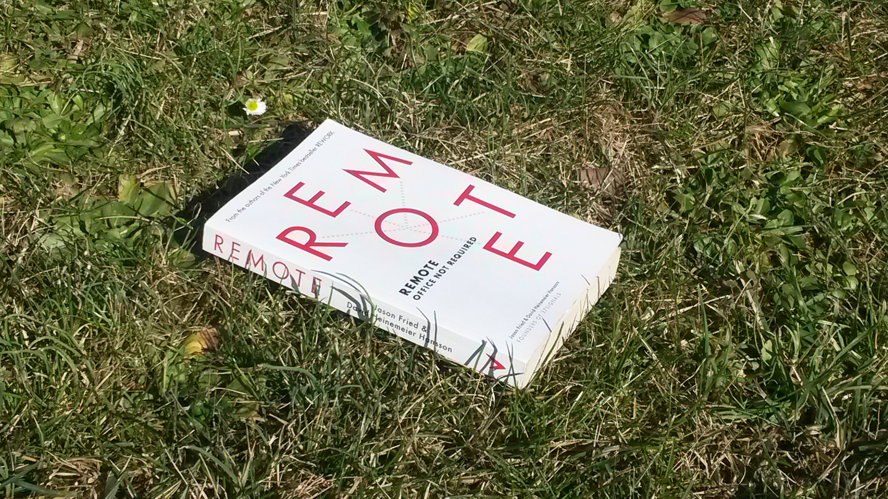

Office Not Required
A presentation about working remotely.
2015/02 • Toulon, France
Author
Nicolas Ferrari, co-founder of alwaysdata.com.
Working remotely for 2 years.
alwaysdata creation
remote working objective
Italy
I speak with my personal XP
Remote?
Calafuria (Toscana, Italy)
Branson ITW on Necker Island (seen at Salon des Entrepreneurs)
Remote, Office Not Required
Jason Fried & David Heinemeier Hansson
Founders of 37Signals
Worker-side presentation (not employer)
No multinational subjects like taxes
“The missing upgrade is for the human mind.”
See open-source softwares as a great example.
open-source / commercial softwares: high scale Internet collaboration
+73% in US between 2005 and 2011
2014: Marissa Meyer (Yahoo!) and Michael Bloomberg
Techno OK
Pros
Freedom
Work hours
Change
Travel
Family

Work
Work is what matters
Work doesn't happen at work
Less distractions
Less meetings & managers
↪ Trust ↩
Judge only work (not hours, or some1 on FB)
Don't work 4 some1 who doesn't trust you
No babysitting
Health
Ergonomics (choose your desk)
“Your Commute Is Killing You”
“According to the research, commuting is associated with an increased risk of obesity, insomnia, stress, neck and back pain, high blood pressure, and other stress-related ills such as heart attacks and depression, and even divorce.”
(Annie Lowrey, Slate, 2011)
ergo: desk, chair, posture (standing?)
And more...
Ecological
Timezones
Business reaching different countries
Changes
More responsabilities and commitment
Communication: asynchronous, telephone, etc.
New distractions: compute different, move!
Loneliness: move!
Stay healthy: move, I said!
↪ Find your routine! ↩
Responsabilities: not to procrastinate & to define boundaries
Manage async com: instant msg? email? meeting? write more doc.
Tel: organize and use SIP
Distractions (give examples): private room, multiple devices
Move: parks, wifi outside, coffee shops, coworking, etc.
Your routine: eat, clothes, crowd noise if you need, work mornings or evenings
Tools
A culture to prepare early!
Chat (Slack/Hipchat, IRC, Jabber, etc.)
Project Management Sofware
Video calls (Google Hangout, Skype, etc.)
Screen/Code sharing
Prepare early: early adoption like young kids and devices we dont had
“In thirty years' time, as technology moves forward even further, people are going to look back and wonder why offices ever existed”
Richard Branson, founder of Virgin Group